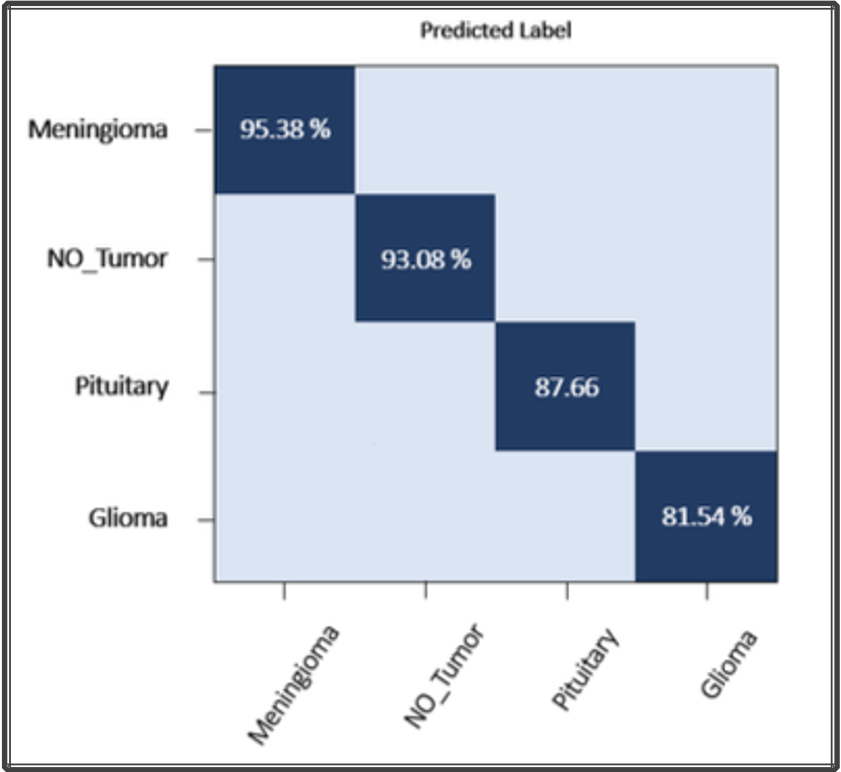

Take a look on the whole work.
If you are interested you can read the whole report to check details. Also, you can contact me by mail if you want to go deeper on the matter.
A fully sketch by Diego Carrillo
If you are interested you can read the whole report to check details. Also, you can contact me by mail if you want to go deeper on the matter.

What is important about this model, besides its capability of classifying objects in photographs, is that the model weights are freely available and can be loaded and used in your own models and applications. Take a look in this article to see details.
This work was part of a research which ended up being my final project delivery for my Master's Degree. This project is related to Neurology science applied and Robotics and Automation. Its main purpose was to give support to medical detection of brain tumor since it represents one of the highest rates around Spain of children deaths and actually one of the biggest rates in Europe.
To deploy this work a VGG16 convolution neural net work architecture was used in which instead of having a large number of hyper-parameter a focused convolution layers of 3x3 filter were prioritized with a stride 1, same padding and maxpool layer of 2x2 filter of stride 2.
This method supports the image clasiffication process through the object detection and classification which is able to classify 1000 images of 1000 different categories with 92.7% accuracy. It is one of the popular algorithms for image classification and is easy to use with transfer learning.
The results after applying VGG16 convolutional neural network showed results highly reliable for 4 different classes of brain tumor (Meningioma, Glioma, Pituitary and No Tumor) which were trained under a public dataset available for researching purposes.
As the main purpose claims, a web app was developed in order to give an extra value to this researching in which the outcome could be displayed in a web browser, this fact was developed taking in count all the feedback received from the medical expertise and the user experience.